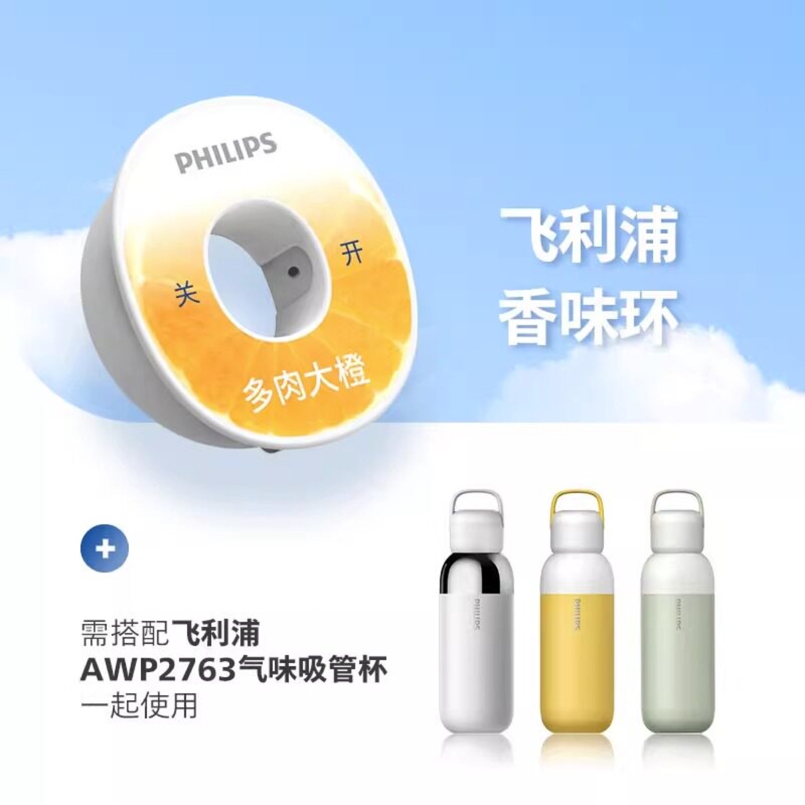

Teardown 12
鼻后嗅觉控糖水杯

用户
想要减少糖分摄入、喜欢甜味但不想喝含糖饮料的人群；减脂、控糖人士
场景
日常喝水，想要尝到甜味，但不希望摄入糖、代糖
当前方案痛点
想喝带甜味的饮品，要么加糖（热量高、升糖），要么加代糖（部分人不喜欢代糖怪味，长期使用存在顾虑）；白开水没有味道，很难坚持大量饮水
创意方案
利用鼻后嗅觉原理：杯口的环形气味环带有甜味香气。喝水的时候，香气顺着鼻腔进入，大脑会感知到甜味；但水里本身不含任何糖和甜味剂，只有普通白水。靠嗅觉欺骗大脑，实现“喝水尝到甜味”。
核心价值
不改变水本身成分，依靠嗅觉感官模拟甜味，满足想吃甜的心理需求；0糖0卡，帮助控糖减脂，让白开水更好喝，提升喝水意愿
方案短板与边界
嗅觉感受因人而异，有的人感知不到明显甜味；气味环会随使用慢慢挥发失效，属于消耗件；只能模拟风味，不能替代真正的味觉；价格比普通水杯高
底层设计思想
不直接改造入口的物质，转而利用人的感官感知规律，通过嗅觉来补偿味觉，用感官欺骗的思路满足用户需求
同思想延伸案例
- 气味调味吸管：吸管自带风味，喝白水尝到味道
- 气味零食：闻着很香，本身几乎没有热量
- 风味鼻吸棒：依靠嗅觉获得提神、清凉感受
AI 机会迁移
不直接改变核心本体，从人的感知侧入手优化体验；用辅助感官刺激，弥补产品本身缺失的体验，降低产品改造成本